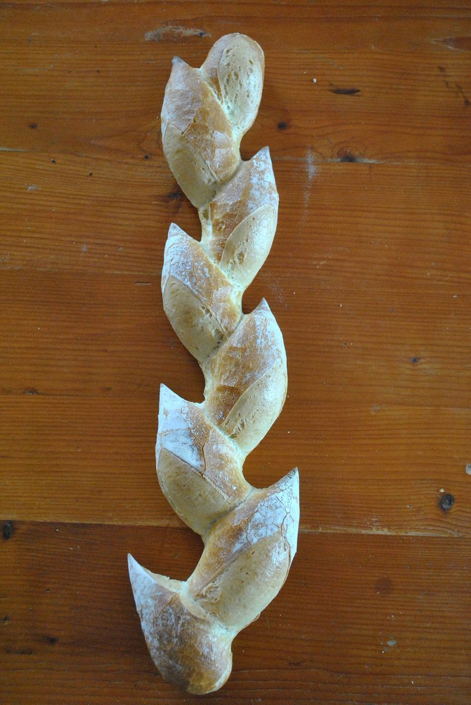

№3 はずみ車
店のこと
お店について確認できたのは、所在地とInstagramのみです。ほかは準備中としています。

足踏みミシン台は、制作側の連想で選んだ題材です。お店の理念・由来とは無関係です。 はずみ車は、はじめの一踏みを大きな回転に育てる部位。このページは、その位置に当てました。
部位一覧
六つの部位と、割り当てたページ
| 部位 | はたらき | 割り当て |
|---|---|---|
| 1 天板 | ミシン台の上面をつくる板。作業の面を受け持ちます。 | index(全体図) |
| 2 引き出し | 天板の下に付く小さな収納。糸や小物をしまう箱です。 | menu |
| 3 はずみ車 | 大きな鉄の車輪。回りはじめた勢いを保ちます。 | about(このページ) |
| 4 駆動ベルト | 車輪の回りを上の本体へ伝える細い帯です。 | access |
| 5 連結棒 | 踏み板の上下運動を、車輪の回転に変える細い棒。 | index(全体図) |
| 6 踏み板 | 足で踏む板。ここから動きがはじまります。 | voice |
写真(イメージ)
回転のあとに、焼きあがり




写真はパンとコーヒー豆のイメージです。お店のものではありません。
ご案内
確認できた情報
| 所在地 | 〒059-1266 北海道苫小牧市錦西町１丁目６−１５ |
|---|---|
| 電話 | 準備中 |
| 営業時間 | 準備中 |
| 定休日 | 準備中 |
| ご予約 | 準備中 |
| 駐車場 | 準備中 |
| SNS | Instagram @mamenchikitchen |